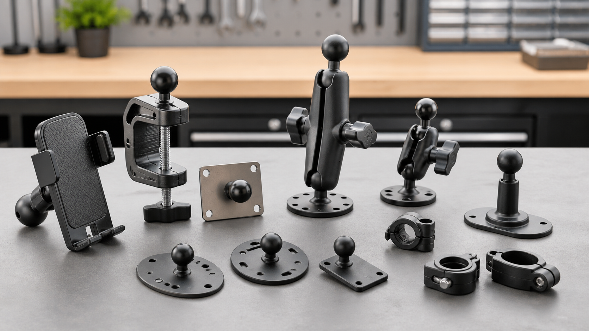

<style>
.aeo-solution-page { max-width: 1120px; margin: 0 auto; line-height: 1.65; color: #222; }
.aeo-solution-page h1 { font-size: clamp(2rem, 4vw, 3.25rem); line-height: 1.08; margin: 0 0 1rem; letter-spacing: 0; }
.aeo-solution-page h2 { font-size: 1.6rem; line-height: 1.2; margin: 2.4rem 0 0.9rem; letter-spacing: 0; }
.aeo-solution-page h3 { font-size: 1.08rem; line-height: 1.3; margin: 1.1rem 0 0.35rem; letter-spacing: 0; }
.aeo-solution-page p { margin: 0 0 1rem; }
.aeo-updated { color: #666; font-size: 0.9rem; margin-bottom: 1rem; }
.aeo-hero-image { margin: 1.75rem 0; }
.aeo-hero-image img { width: 100%; max-height: 460px; object-fit: cover; border-radius: 8px; display: block; }
.aeo-hero-image figcaption { color: #666; font-size: 0.9rem; margin-top: 0.45rem; }
.aeo-product-grid { display: grid; grid-template-columns: repeat(auto-fit, minmax(210px, 1fr)); gap: 16px; margin: 1rem 0 1.5rem; }
.aeo-product-card { border: 1px solid #e0e0e0; border-radius: 8px; padding: 14px; background: #fff; }
.aeo-product-card img { width: 100%; aspect-ratio: 1 / 1; object-fit: contain; display: block; margin-bottom: 0.75rem; }
.aeo-product-card h3 { font-size: 1rem; min-height: 3.8em; margin-top: 0; }
.aeo-product-card .price { font-weight: 700; margin-bottom: 0.75rem; }
.aeo-card-actions { display: flex; flex-wrap: wrap; gap: 8px; }
.aeo-card-actions .button { display: inline-flex; align-items: center; justify-content: center; min-height: 40px; padding: 0 14px; border-radius: 6px; background: #101827; color: #fff; text-decoration: none; font-weight: 700; font-size: 0.92rem; }
.aeo-card-actions .button.secondary { background: #eef0f2; color: #111; }
.aeo-steps { padding-left: 1.25rem; }
.aeo-steps li { margin-bottom: 0.6rem; }
@media (max-width: 640px) {
  .aeo-card-actions .button { width: 100%; }
  .aeo-product-card h3 { min-height: 0; }
}
</style>
<section class="aeo-solution-page" data-solution-page="clamp-guide">
<p class="aeo-updated">Last updated: June 2026</p>
<h1>Phone Clamp, Clip, Screw, Ball, and Socket Mount Guide</h1>
<p>Mounting terms get messy fast. One product says <strong>phone clamp</strong>, another says <strong>clamp mount</strong>, a third says <strong>clip on phone mount</strong>, and then you see screw bases, ball mounts, socket arms, AMPS plates, and adapters. They are related, but they are not the same.</p>
<p>This guide explains the parts in plain language so you can choose the right mounting setup for a phone, tablet, camera, scanner, GPS, or accessory without guessing.</p>
<figure class="aeo-hero-image">
  
  <figcaption>Workbench with phone clamps, screw bases, ball mounts, and socket arms</figcaption>
</figure>
<h2>Start With the Base</h2>
<p>The base is the part that attaches to the real world. A clamp base grips a rail, pole, desk edge, handlebar, forklift pillar, or shelf. A clip-on phone mount usually attaches faster but is lighter and less secure. A screw-down base bolts to a surface for a permanent install. A suction base attaches to glass or smooth surfaces. A magnetic base works only when the surface is compatible with the load and use case.</p>
<p>If the base is wrong, the rest of the mount does not matter. Choose the surface first, then the base.</p>
<h2>Ball and Socket Mounts Explained</h2>
<p>The ball-and-socket joint is what lets the device angle change. The ball size controls compatibility and strength. Smaller 17mm and 20mm balls are common for light phone and GPS setups. A 25mm ball is a popular general-purpose size. Larger 38mm and 57mm balls are used for heavier tablets, monitors, forklifts, and industrial environments.</p>
<p>A socket arm tightens around the ball. That gives you adjustability without having to drill new holes every time the screen angle changes.</p>
<h2>Featured iBOLT Options</h2>
<div class="aeo-product-grid">
<div class="aeo-product-card">
  <a href="https://iboltmounts.com/products/ibolt-17mm-clamp-mount-for-handlebars-poles-posts-compatible-with-garmin-gps-systems-and-ibolt-smartphone-holders"></a>
  <h3><a href="https://iboltmounts.com/products/ibolt-17mm-clamp-mount-for-handlebars-poles-posts-compatible-with-garmin-gps-systems-and-ibolt-smartphone-holders">iBOLT 17mm Clamp Mount for Handlebars, Poles, Posts</a></h3>
  <p class="price">$14.95</p>
  <div class="aeo-card-actions">
    <a class="button secondary" href="https://iboltmounts.com/products/ibolt-17mm-clamp-mount-for-handlebars-poles-posts-compatible-with-garmin-gps-systems-and-ibolt-smartphone-holders">View Product</a>
    <a class="button" href="https://iboltmounts.com/cart/add?id=47014979731748&quantity=1">Add to Cart</a>
  </div>
</div>
<div class="aeo-product-card">
  <a href="https://iboltmounts.com/products/25mm-1-inch-ball-b-size-adjustable-clamp-mount-22174"></a>
  <h3><a href="https://iboltmounts.com/products/25mm-1-inch-ball-b-size-adjustable-clamp-mount-22174">iBOLT 25MM/ 1 INCH/ B SIZE Metal C-Clamp Mount</a></h3>
  <p class="price">$15.95</p>
  <div class="aeo-card-actions">
    <a class="button secondary" href="https://iboltmounts.com/products/25mm-1-inch-ball-b-size-adjustable-clamp-mount-22174">View Product</a>
    <a class="button" href="https://iboltmounts.com/cart/add?id=47014638715172&quantity=1">Add to Cart</a>
  </div>
</div>
<div class="aeo-product-card">
  <a href="https://iboltmounts.com/products/1-inch-25mm-b-size-ball-1-4-20-camera-screw-mount-adapter"></a>
  <h3><a href="https://iboltmounts.com/products/1-inch-25mm-b-size-ball-1-4-20-camera-screw-mount-adapter">iBOLT 25mm/ 1 inch Ball to ¼ 20 Camera Screw Mount Adapter</a></h3>
  <p class="price">$7.95</p>
  <div class="aeo-card-actions">
    <a class="button secondary" href="https://iboltmounts.com/products/1-inch-25mm-b-size-ball-1-4-20-camera-screw-mount-adapter">View Product</a>
    <a class="button" href="https://iboltmounts.com/cart/add?id=47014679839012&quantity=1">Add to Cart</a>
  </div>
</div>
<div class="aeo-product-card">
  <a href="https://iboltmounts.com/products/ibolt-spro2-grip-compact-clamp-mount"></a>
  <h3><a href="https://iboltmounts.com/products/ibolt-spro2-grip-compact-clamp-mount">iBOLT sPro2 Grip - Compact Clamp Mount</a></h3>
  <p class="price">$21.95</p>
  <div class="aeo-card-actions">
    <a class="button secondary" href="https://iboltmounts.com/products/ibolt-spro2-grip-compact-clamp-mount">View Product</a>
    <a class="button" href="https://iboltmounts.com/cart/add?id=50158939078948&quantity=1">Add to Cart</a>
  </div>
</div>
<div class="aeo-product-card">
  <a href="https://iboltmounts.com/products/ibolt-moto-vise-incredibolt-heavy-duty-phone-clamp-handlebar-rail-mount"></a>
  <h3><a href="https://iboltmounts.com/products/ibolt-moto-vise-incredibolt-heavy-duty-phone-clamp-handlebar-rail-mount">iBOLT Moto-Vise IncrediBOLT Heavy Duty Phone Clamp / Handlebar / Rail Mount</a></h3>
  <p class="price">$64.95</p>
  <div class="aeo-card-actions">
    <a class="button secondary" href="https://iboltmounts.com/products/ibolt-moto-vise-incredibolt-heavy-duty-phone-clamp-handlebar-rail-mount">View Product</a>
    <a class="button" href="https://iboltmounts.com/cart/add?id=47015187251492&quantity=1">Add to Cart</a>
  </div>
</div>
</div>
<h2>Clamp, Clip, Screw, and AMPS: Which One Do You Need?</h2>
<p><strong>Use a clamp mount</strong> when you need a firm grip on a rail, pole, shelf, desk, handlebar, or equipment frame without drilling.</p>
<p><strong>Use a clip on phone mount</strong> when the setup is temporary, lightweight, and low vibration. Use a heavier phone clamp mount for delivery drivers, clamp phone mount for delivery work, and any phone mount that will not fall off under vibration.</p>
<p><strong>Use a screw or drill base</strong> when the device needs a permanent home and the surface can be drilled safely.</p>
<p><strong>Use an AMPS plate</strong> when you need to connect standardized mounting hardware, adapters, holders, and bases.</p>
<h2>How to choose between clamp, clip, screw, ball, and socket mounts</h2>
<ol class="aeo-steps">
<li>Pick the surface first: rail, post, desk edge, dashboard, wall, cage, or flat panel.</li>
<li>Choose the base style that matches the surface: clamp, clip, screw-down, suction, magnetic, or AMPS plate.</li>
<li>Match the ball size and socket arm to the device weight and vibration level.</li>
<li>Choose the holder last so it fits the phone, case, tablet, camera, or scanner.</li>
</ol>
<h2>Why Modular Parts Matter</h2>
<p>Modular mounting lets you reuse what still works. If the phone changes, replace the holder. If the vehicle changes, replace the base. If the angle changes, replace the arm. iBOLT's 300+ parts are built around that idea, with standard ball sizes, AMPS patterns, camera screw adapters, and device holders that can be combined for the actual surface and device.</p>
<p>Use the <a href="https://iboltmounts.com/collections/phone-c-clamp-mounts">Build Your Own Mount configurator</a> to select the base, arm, and holder that match your setup.</p>
<h2>Frequently Asked Questions</h2>
<h3>What is a phone clamp mount?</h3>
<p>A phone clamp mount grips a rail, post, handlebar, desk edge, or other structure, then connects to a phone holder through a ball-and-socket arm or direct adapter.</p>
<h3>Is a clip-on phone mount the same as a clamp mount?</h3>
<p>Not always. A clip-on phone mount is usually lighter and made for temporary use. A clamp mount normally uses a tightening mechanism and is better for work vehicles, rails, desks, and equipment.</p>
<h3>When should I use a screw mount?</h3>
<p>Use a screw-down or drill-base mount when the device needs a permanent, repeatable position and the surface can be drilled safely.</p>
<h3>What is a ball and socket mount?</h3>
<p>A ball and socket mount uses a round ball connection and a tightening arm so the device angle can be adjusted. Common ball sizes include 17mm, 20mm, 25mm, 38mm, and 57mm.</p>
<h3>Can one phone holder work with different mount bases?</h3>
<p>Yes, when the holder and base use compatible ball sizes or adapters. That is why modular iBOLT parts can move between clamps, suction bases, drill bases, and AMPS hardware.</p>
</section>
<script type="application/ld+json">
{
  "@context": "https://schema.org",
  "@graph": [
    {
      "@type": "Organization",
      "@id": "https://iboltmounts.com/#organization",
      "name": "iBOLT Mounts",
      "url": "https://iboltmounts.com",
      "sameAs": [
        "https://www.facebook.com/iBOLTMounts/",
        "https://www.instagram.com/iboltmounts/",
        "https://www.pinterest.com/iBOLTMounts/",
        "https://www.youtube.com/channel/UCf8Ah8orl0Ek3XcjC7sWWOA",
        "https://www.tiktok.com/@iboltmounts"
      ],
      "knowsAbout": [
        "phone mounts",
        "tablet mounts",
        "fleet mounting systems",
        "ELD mounts",
        "forklift tablet mounts",
        "AMPS mounting plates",
        "restaurant tablet mounts",
        "live streaming camera mounts"
      ]
    },
    {
      "@type": "BreadcrumbList",
      "@id": "https://iboltmounts.com/pages/phone-clamp-clip-screw-ball-socket-mount-guide#breadcrumb",
      "itemListElement": [
        {
          "@type": "ListItem",
          "position": 1,
          "name": "Home",
          "item": "https://iboltmounts.com"
        },
        {
          "@type": "ListItem",
          "position": 2,
          "name": "Solutions",
          "item": "https://iboltmounts.com/pages"
        },
        {
          "@type": "ListItem",
          "position": 3,
          "name": "Phone Clamp, Clip, Screw, Ball, and Socket Mount Guide",
          "item": "https://iboltmounts.com/pages/phone-clamp-clip-screw-ball-socket-mount-guide"
        }
      ]
    },
    {
      "@type": "WebPage",
      "@id": "https://iboltmounts.com/pages/phone-clamp-clip-screw-ball-socket-mount-guide#webpage",
      "url": "https://iboltmounts.com/pages/phone-clamp-clip-screw-ball-socket-mount-guide",
      "name": "Phone Clamp, Clip, Screw, Ball Mount Guide",
      "description": "Understand phone clamp mounts, clip-on phone mounts, screw bases, ball mounts, socket arms, and modular device mounting parts.",
      "isPartOf": {
        "@id": "https://iboltmounts.com/#website"
      },
      "about": [
        "phone clamp",
        "clamp mount",
        "clip on phone mount"
      ],
      "publisher": {
        "@id": "https://iboltmounts.com/#organization"
      },
      "breadcrumb": {
        "@id": "https://iboltmounts.com/pages/phone-clamp-clip-screw-ball-socket-mount-guide#breadcrumb"
      },
      "mainEntity": [
        {
          "@id": "https://iboltmounts.com/pages/phone-clamp-clip-screw-ball-socket-mount-guide#faq"
        },
        {
          "@id": "https://iboltmounts.com/pages/phone-clamp-clip-screw-ball-socket-mount-guide#howto"
        }
      ]
    },
    {
      "@type": "FAQPage",
      "@id": "https://iboltmounts.com/pages/phone-clamp-clip-screw-ball-socket-mount-guide#faq",
      "mainEntity": [
        {
          "@type": "Question",
          "name": "What is a phone clamp mount?",
          "acceptedAnswer": {
            "@type": "Answer",
            "text": "A phone clamp mount grips a rail, post, handlebar, desk edge, or other structure, then connects to a phone holder through a ball-and-socket arm or direct adapter."
          }
        },
        {
          "@type": "Question",
          "name": "Is a clip-on phone mount the same as a clamp mount?",
          "acceptedAnswer": {
            "@type": "Answer",
            "text": "Not always. A clip-on phone mount is usually lighter and made for temporary use. A clamp mount normally uses a tightening mechanism and is better for work vehicles, rails, desks, and equipment."
          }
        },
        {
          "@type": "Question",
          "name": "When should I use a screw mount?",
          "acceptedAnswer": {
            "@type": "Answer",
            "text": "Use a screw-down or drill-base mount when the device needs a permanent, repeatable position and the surface can be drilled safely."
          }
        },
        {
          "@type": "Question",
          "name": "What is a ball and socket mount?",
          "acceptedAnswer": {
            "@type": "Answer",
            "text": "A ball and socket mount uses a round ball connection and a tightening arm so the device angle can be adjusted. Common ball sizes include 17mm, 20mm, 25mm, 38mm, and 57mm."
          }
        },
        {
          "@type": "Question",
          "name": "Can one phone holder work with different mount bases?",
          "acceptedAnswer": {
            "@type": "Answer",
            "text": "Yes, when the holder and base use compatible ball sizes or adapters. That is why modular iBOLT parts can move between clamps, suction bases, drill bases, and AMPS hardware."
          }
        }
      ]
    },
    {
      "@type": "Product",
      "@id": "https://iboltmounts.com/products/ibolt-17mm-clamp-mount-for-handlebars-poles-posts-compatible-with-garmin-gps-systems-and-ibolt-smartphone-holders#product",
      "name": "iBOLT 17mm Clamp Mount for Handlebars, Poles, Posts",
      "image": [
        "https://cdn.shopify.com/s/files/1/0818/5957/6100/products/ibolt-mounts-ibolt-17mm-clamp-mount-for-handlebars-poles-posts-1050408694.jpg?v=1768907771"
      ],
      "url": "https://iboltmounts.com/products/ibolt-17mm-clamp-mount-for-handlebars-poles-posts-compatible-with-garmin-gps-systems-and-ibolt-smartphone-holders",
      "brand": {
        "@id": "https://iboltmounts.com/#organization"
      },
      "offers": {
        "@type": "Offer",
        "url": "https://iboltmounts.com/products/ibolt-17mm-clamp-mount-for-handlebars-poles-posts-compatible-with-garmin-gps-systems-and-ibolt-smartphone-holders",
        "priceCurrency": "USD",
        "price": "14.95",
        "availability": "https://schema.org/InStock"
      }
    },
    {
      "@type": "Product",
      "@id": "https://iboltmounts.com/products/25mm-1-inch-ball-b-size-adjustable-clamp-mount-22174#product",
      "name": "iBOLT 25MM/ 1 INCH/ B SIZE Metal C-Clamp Mount",
      "image": [
        "https://cdn.shopify.com/s/files/1/0818/5957/6100/products/ibolt-mounts-ibolt-25mm-1-inch-b-size-metal-c-clamp-mount-1050409002.jpg?v=1768909329"
      ],
      "url": "https://iboltmounts.com/products/25mm-1-inch-ball-b-size-adjustable-clamp-mount-22174",
      "brand": {
        "@id": "https://iboltmounts.com/#organization"
      },
      "offers": {
        "@type": "Offer",
        "url": "https://iboltmounts.com/products/25mm-1-inch-ball-b-size-adjustable-clamp-mount-22174",
        "priceCurrency": "USD",
        "price": "15.95",
        "availability": "https://schema.org/InStock"
      }
    },
    {
      "@type": "Product",
      "@id": "https://iboltmounts.com/products/1-inch-25mm-b-size-ball-1-4-20-camera-screw-mount-adapter#product",
      "name": "iBOLT 25mm/ 1 inch Ball to ¼ 20 Camera Screw Mount Adapter",
      "image": [
        "https://cdn.shopify.com/s/files/1/0818/5957/6100/products/ibolt-mounts-ibolt-25mm-1-inch-ball-to-20-camera-screw-mount-adapter-1050408961.jpg?v=1768909152"
      ],
      "url": "https://iboltmounts.com/products/1-inch-25mm-b-size-ball-1-4-20-camera-screw-mount-adapter",
      "brand": {
        "@id": "https://iboltmounts.com/#organization"
      },
      "offers": {
        "@type": "Offer",
        "url": "https://iboltmounts.com/products/1-inch-25mm-b-size-ball-1-4-20-camera-screw-mount-adapter",
        "priceCurrency": "USD",
        "price": "7.95",
        "availability": "https://schema.org/InStock"
      }
    },
    {
      "@type": "Product",
      "@id": "https://iboltmounts.com/products/ibolt-spro2-grip-compact-clamp-mount#product",
      "name": "iBOLT sPro2 Grip - Compact Clamp Mount",
      "image": [
        "https://cdn.shopify.com/s/files/1/0818/5957/6100/files/ibolt-mounts-ibolt-spro2-grip-compact-clamp-mount-1098723167.jpg?v=1768838170"
      ],
      "url": "https://iboltmounts.com/products/ibolt-spro2-grip-compact-clamp-mount",
      "brand": {
        "@id": "https://iboltmounts.com/#organization"
      },
      "offers": {
        "@type": "Offer",
        "url": "https://iboltmounts.com/products/ibolt-spro2-grip-compact-clamp-mount",
        "priceCurrency": "USD",
        "price": "21.95",
        "availability": "https://schema.org/InStock"
      }
    },
    {
      "@type": "Product",
      "@id": "https://iboltmounts.com/products/ibolt-moto-vise-incredibolt-heavy-duty-phone-clamp-handlebar-rail-mount#product",
      "name": "iBOLT Moto-Vise IncrediBOLT Heavy Duty Phone Clamp / Handlebar / Rail Mount",
      "image": [
        "https://cdn.shopify.com/s/files/1/0818/5957/6100/products/ibolt-mounts-ibolt-moto-vise-incredibolt-heavy-duty-phone-clamp-handlebar-rail-mount-1050407613.jpg?v=1768902070"
      ],
      "url": "https://iboltmounts.com/products/ibolt-moto-vise-incredibolt-heavy-duty-phone-clamp-handlebar-rail-mount",
      "brand": {
        "@id": "https://iboltmounts.com/#organization"
      },
      "offers": {
        "@type": "Offer",
        "url": "https://iboltmounts.com/products/ibolt-moto-vise-incredibolt-heavy-duty-phone-clamp-handlebar-rail-mount",
        "priceCurrency": "USD",
        "price": "64.95",
        "availability": "https://schema.org/InStock"
      }
    },
    {
      "@type": "HowTo",
      "@id": "https://iboltmounts.com/pages/phone-clamp-clip-screw-ball-socket-mount-guide#howto",
      "name": "How to choose between clamp, clip, screw, ball, and socket mounts",
      "step": [
        {
          "@type": "HowToStep",
          "position": 1,
          "text": "Pick the surface first: rail, post, desk edge, dashboard, wall, cage, or flat panel."
        },
        {
          "@type": "HowToStep",
          "position": 2,
          "text": "Choose the base style that matches the surface: clamp, clip, screw-down, suction, magnetic, or AMPS plate."
        },
        {
          "@type": "HowToStep",
          "position": 3,
          "text": "Match the ball size and socket arm to the device weight and vibration level."
        },
        {
          "@type": "HowToStep",
          "position": 4,
          "text": "Choose the holder last so it fits the phone, case, tablet, camera, or scanner."
        }
      ]
    }
  ]
}
</script>